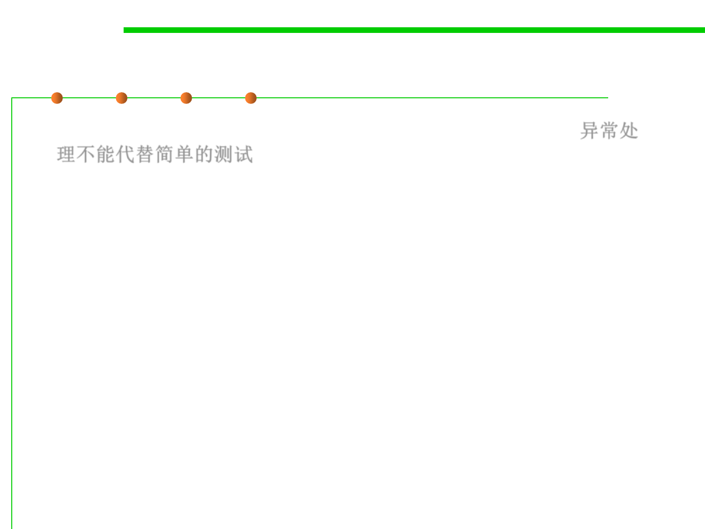

7.2 Error and Exception Handling
Exception handling cannot replace test
▪ Exception handling is not supposed to replace a simple test. 异常处
理不能代替简单的测试
– As an example, we wrote some code that tries 10,000,000 times to pop an
empty stack. It first does this by finding out whether the stack is empty.
if (!s.empty()) s.pop();
– Next, we force it to pop the stack no matter what and then catch the
EmptyStackException that tells us we should not have done that.
try {
s.pop();
}
catch (EmptyStackException e) { }
▪ The version that calls isEmpty ran in 646 milliseconds. The version
that catches the EmptyStackException ran in 21,739 milliseconds ---
it took far longer to catch an exception than to perform a simple test.
▪ The moral is: Use exceptions for exceptional circumstances only.